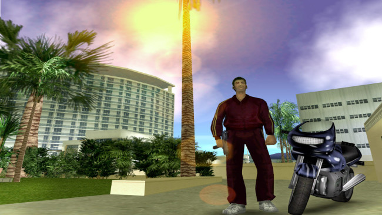
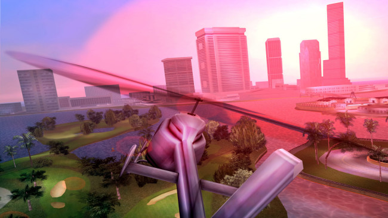
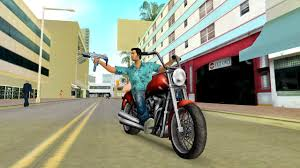

Grand Theft Auto vice city FREE DOWNLOAD
Download grand theft auto vice city for PC on M26 Gaming Store
About Game
Welcome to GTA Vice City. Welcome to the 1980s. From the decade of big hair, excess and pastel suits comes a story of one man’s rise to the top of the criminal pile. Vice City, a huge urban sprawl ranging from the beach to the swamps and the glitz to the ghetto, was one of the most varied, complete and alive digital cities ever created. Combining open-world gameplay with a character driven narrative, you arrive in a town brimming with delights and degradation and given the opportunity to take it over as you choose. Having just made it back onto the streets of Liberty City after a long stretch in maximum security, Tommy Vercetti is sent to Vice City by his old boss, Sonny Forelli. They were understandably nervous about his re-appearance in Liberty City, so a trip down south seemed like a good idea. But all does not go smoothly upon his arrival in the glamorous, hedonistic metropolis of Vice City. He’s set up and is left with no money and no merchandise. Sonny wants his money back, but the biker gangs, Cuban gangsters, and corrupt politicians stand in his way. Most of Vice City seems to want Tommy dead. His only answer is to fight back and take over the city himself.
SCREENSHOTS
  How to download and install ?
- Click the Download button below and you should be redirected to Uploadhaven
- Get the link from the follow on site
- Once Grand Theft Auto vice is done downloading, right click the .zip file and click on “Extract to Grand Theft Auto vice city v1.41.zip” (To do this you must have WinRAR, which you can get here).
- Double click inside the Grand Theft Auto:vice city folder and run the exe application.
- Have fun and play! Make sure to run the game as administrator and if you get any missing dll errors, look for a Redist or _CommonRedist folder and install all the programs in the folder.
- In the case, the game shows please update, then request us from the request update button.
DOWNLOAD GAME
The download link is taken from STEAMUNLOCKED WEBSITE. The download link is generated by steamunlocked website which i have embeded in my website
SYSTEM REQUIREMENTS
- Requires a 32-bit processor and operating system
- Processor: 800 MHz Intel Pentium III or 800 MHz AMD Athlon or 1.2GHz Intel Celeron or 1.2 GHz AMD Duron processor
- Memory: 128 MBRAM
- Storage: 1.5 GB available space
- Sound Card: 100% DirectX 10 compatible